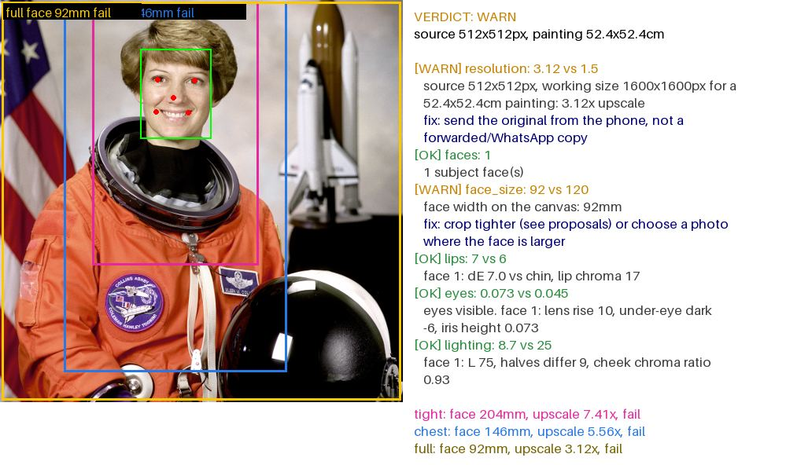
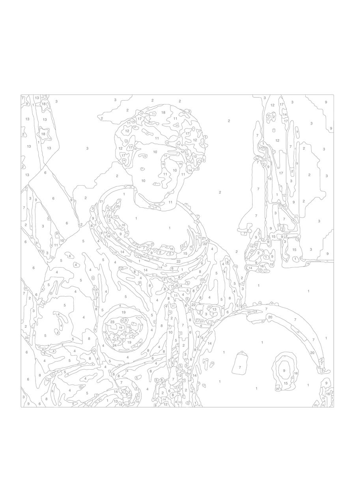
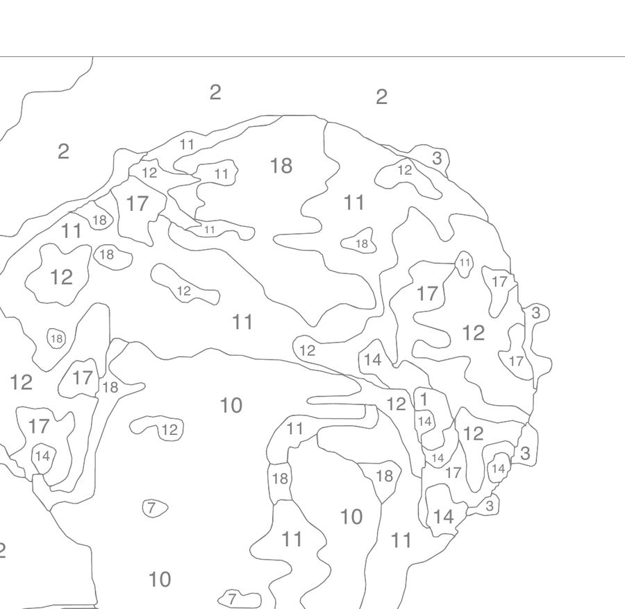
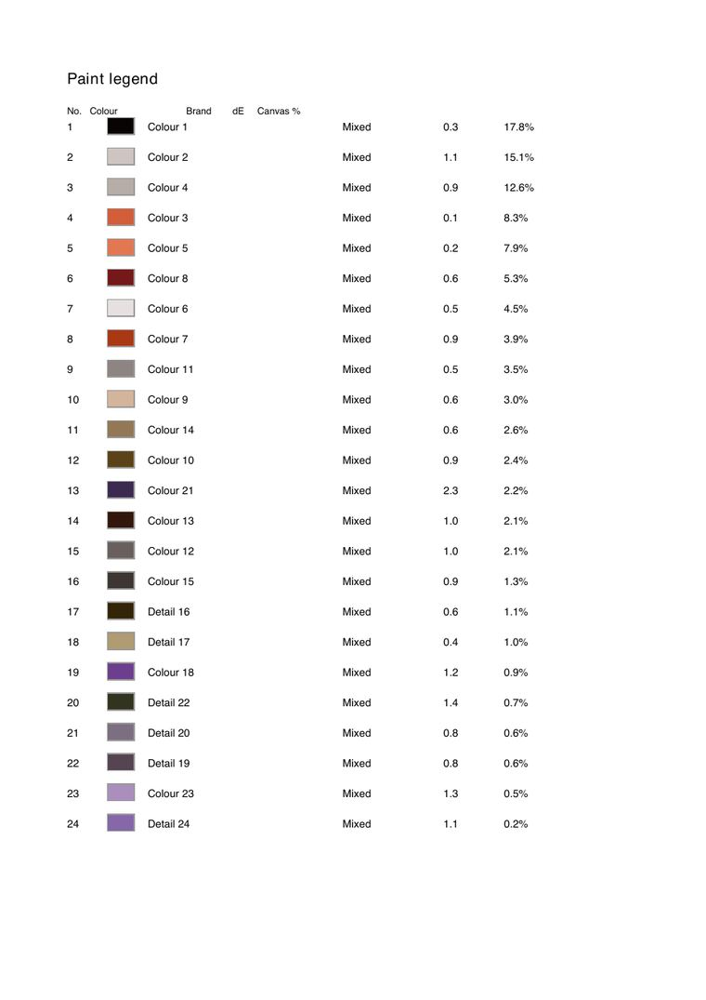
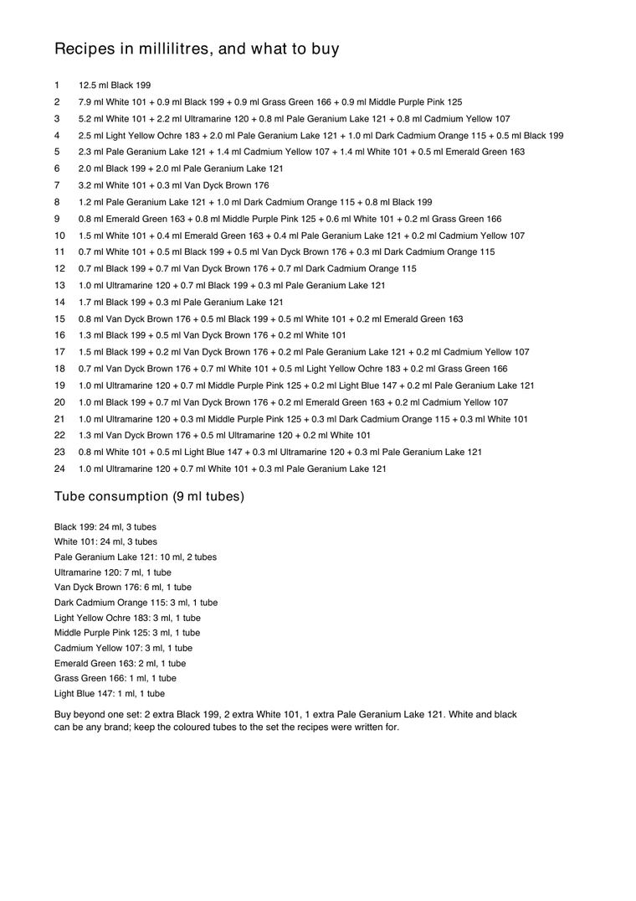
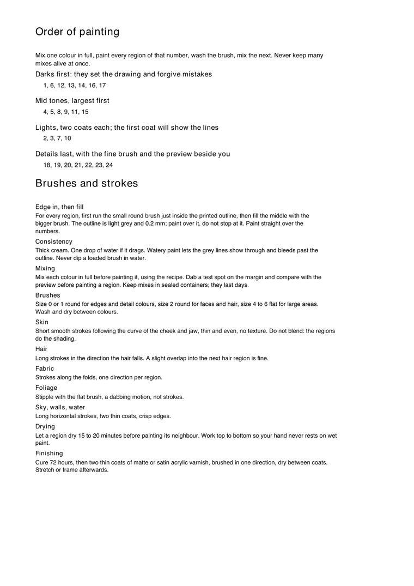
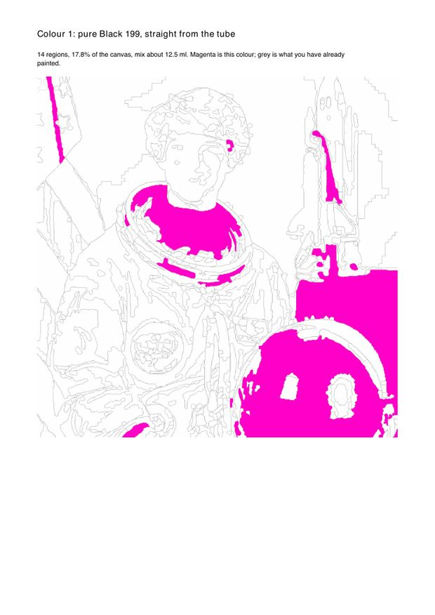
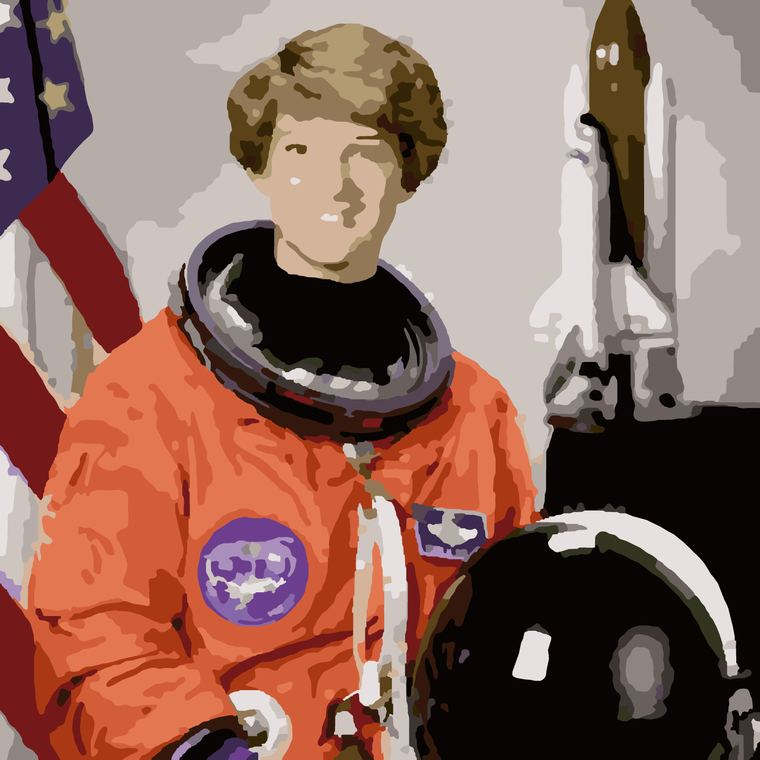
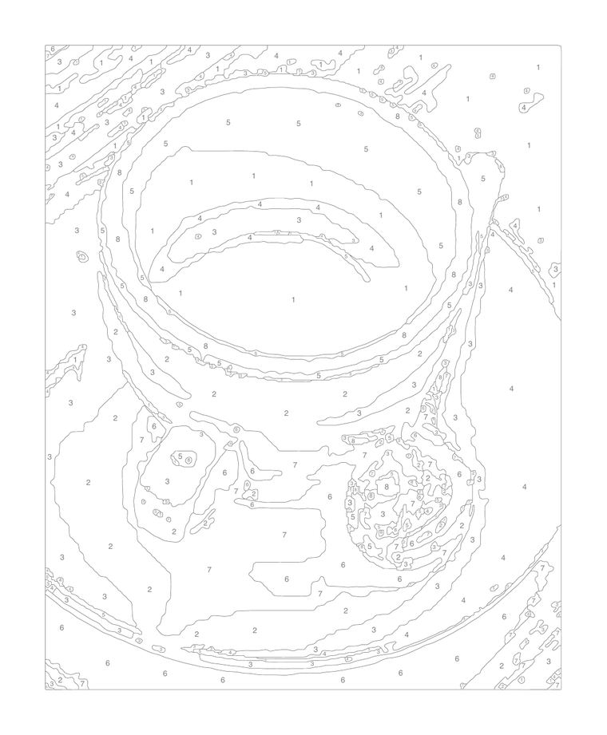

photo-to-paint
Turns a photo into a paint-by-numbers kit you can print and paint, from the assessment to the painting guide.
- Kind
- Art and tools
- Where
- Open source
- Links
- Repository
The problem
A paint-by-numbers picture is easy to make on a screen. Printed at 50 cm and picked up with a brush, it has slivers too thin to fill and colours no tube matches.
What was built
A command line tool that writes everything a customer receives: an assessment of the photo, a numbered canvas at true size, a legend, mixing recipes for a real paint set, a painting guide and a preview. Every limit is in millimetres, not pixels.
- 462numbered regions on the astronaut canvas, 52.4 by 52.4 cm
- 24colours, each mixed from a 12-tube acrylic set
- 2.5 mmsmallest printed number on the canvas
- about 26 sfor the whole kit on a laptop
A walk through one kit
Everything below came from one run of the tool on the public-domain astronaut photo in its demo folder: uv run pbn kit demo/astronaut.png --out kit/. Nothing was retouched.
Will this photo make a good kit?
Before anything is drawn, pbn assess measures the photo against the sheet it will be printed on: resolution, how large the face will be on the canvas, whether the eyes and lips will survive, and the lighting. Every check is reported with its threshold and a fix. This photo passes with two warnings: it is only 512 pixels wide, so it is enlarged 3.1 times, and the face would print 92 mm wide against a 120 mm target. It proposes three crops and says which would work.

The numbered canvas
The photo is softened, cut into patches that follow edges, and merged into regions; merging across a strong edge is penalised, so a lip line or an eyelid crease survives. Each region is checked in millimetres: anything thinner than a brush can fill dissolves into its neighbour, and every number is printed at least 2.5 mm tall.


Colours you can buy
Each region's colour is snapped to something a person can actually mix. The legend keys every number to a swatch, and the colour index says how much of the canvas each one covers, so the biggest colours are mixed first.


The guide
The painting guide says what order to paint in (darks first, details last, two coats for the lights), which brush and stroke suit skin, hair and fabric, and then gives one check page per colour with every region of that colour marked, so nothing is missed.


What it will look like
The preview paints every region in its mixed colour. It is the picture on the box, and it is also the test: if the preview does not look like the photo, the kit is not shipped.


pbn generate: 257 regions. Its 24 requested colours collapsed to 8 distinct paints, and the tool says so.Status and known gaps
It runs today; the kit above was generated on 17 November 2026. The bundled paint palettes are approximations, because paint makers do not publish colour data; a calibration command measures your own tubes from a photographed swatch grid. Portraits need extra skin tones. Pigment mixing uses Mixbox, which is licensed for non-commercial use.